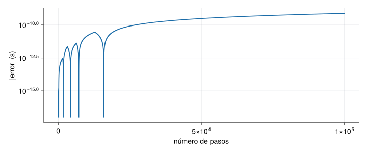

Un ordenador no guarda los números reales: guarda aproximaciones con un número finito de cifras. Casi nunca importa, pero en procesado de señales aparece en dos sitios: al acumular muchos valores (un eje de tiempos, una media) y al comparar resultados («¿son iguales estos dos números?»). Esta unidad presenta los tipos básicos de Julia, la precisión de máquina y las estructuras de control (condicionales y bucles), con cuidado en el ámbito de las variables, que es donde Julia se diferencia de Python.
NotaCómo se lee esta unidad
Tiempo orientativo: 60 minutos. Objetivos (3), teoría en cinco píldoras (12), práctica guiada (25), «Pídeselo a Claude» (8), ejercicios (10) y cierre (2).
Objetivos y prerrequisitos
Objetivos. Al terminar esta unidad sabrás:
reconocer los tipos numéricos básicos (Int64, Float64, Float32, Bool, Complex) y consultarlos con typeof;
explicar qué es la precisión de máquina y por qué 0.1 + 0.2 != 0.3;
comparar números en coma flotante con ≈ y no con ==;
escribir condicionales y bucles for y while, con break y continue;
predecir en qué ámbito vive una variable y por qué un script puede comportarse distinto del REPL.
Reparto con otras unidades. Las funciones se tratan en J1.4 y los arrays en J1.5. El análisis riguroso del error de redondeo y del condicionamiento está en M2.1.
Teoría breve
NotaUn poco de historia: el estándar IEEE 754
Los números en coma flotante de casi todos los lenguajes siguen el estándar IEEE 754, publicado en 1985 y revisado en 2008 y 2019. Define, entre otros, los formatos de 32 y 64 bits que en Julia son Float32 y Float64(Higham 2020). A William Kahan se le reconoce como principal artífice del estándar, y recibió en 1989 el Premio Turing de la ACM por sus contribuciones al análisis numérico (William Kahan. A. M. Turing Award, 1989 1989). Que 0.1 + 0.2 no sea exactamente 0.3 no es un defecto de Julia: es una propiedad del formato, igual en Python, C o MATLAB.
Fuente: Higham, What Is IEEE Standard Arithmetic? (07-05-2020) (Higham 2020), y ACM (William Kahan. A. M. Turing Award, 1989 1989). La atribución a Kahan como «principal artífice» procede de resultados de búsqueda, no de la lectura completa de la página de la ACM. Consultado el 26-10-2026.
Dos cosas conviene saber desde el principio. La división / siempre devuelve un real (7/2 == 3.5), mientras que ÷ es la división entera (7 ÷ 2 == 3) y % el resto. Y los enteros no avisan si se desbordan: typemax(Int64) + 1 da el mayor negativo, sin error.
Ver el código
(real =7/2, entera =7÷2, resto =7%2, desborde =typemax(Int64) +1==typemin(Int64))
Falso. / devuelve siempre un real: 4 / 2 == 2.0 (Float64). Para la división entera se usa 4 ÷ 2.
J1.3.2 Precisión de máquina
Un Float64 guarda 52 bits de mantisa, es decir, unas 16 cifras decimales. Los números que se pueden representar no están repartidos por igual: el hueco entre dos números consecutivos se duplica cada vez que se pasa una potencia de 2 (portada de la unidad). El hueco relativo es el épsilon de máquina, eps(), que en doble precisión vale \(2{,}2\cdot10^{-16}\) y en Float32 unos \(1{,}2\cdot10^{-7}\). Consecuencias:
Ver el código
(eps64 =eps(), eps32 =eps(Float32), suma =0.1+0.2, igual =0.1+0.2==0.3, casi_igual =0.1+0.2≈0.3)
La regla práctica es: nunca se comparan reales con ==; se usa ≈ (\approx + tabulador) o isapprox, que admite una tolerancia relativa.
AdvertenciaErrores frecuentes
== entre resultados de cálculos con decimales falla de forma aparentemente caprichosa (0.1 + 0.2 == 0.3 es falso). Un cálculo puede dar 9.999999999999831 donde se esperaba 10. Eso no es un error de Julia: es el redondeo, que ocurre igual en Python, MATLAB o C.
¿Cuánto vale eps() (el épsilon de máquina de Float64), en unidades de \(10^{-16}\)?
eps() = 2.220446049250313e-16, es decir, 2,2204 en unidades de \(10^{-16}\).
J1.3.3 Condicionales y operadores lógicos
Un condicional ejecuta código solo si se cumple una condición:
ifabs(x) >1.2println("supera el umbral")elseifabs(x) >1.0println("cerca del umbral")elseprintln("normal")end
Los operadores de comparación son ==, != (o ≠), <, <= (o ≤) y ≈; los lógicos, && (y), || (o) y ! (no), y los dos primeros evalúan en cortocircuito: en i <= n && x[i] > 0 la segunda condición solo se evalúa si la primera es cierta, lo que evita salirse de un vector. Hay una forma compacta de condicional, el operador ternario: y = x > 0 ? x : 0.
En i <= length(x) && abs(x[i]) > 1, si i es mayor que length(x) no se llega a evaluar x[i] y no hay error.
Verdadero. && evalúa en cortocircuito: si el primer miembro es falso, el segundo no se evalúa.
J1.3.4 Bucles
Un for recorre una colección o un rango; un while, mientras se cumpla una condición. break sale del bucle y continue salta a la siguiente iteración:
for i in1:5# 1, 2, 3, 4, 5 i ==3&&continueprintln(i)endi =1while i <=5 i ==4&&break i +=1end
Los rangos como 1:5 o 0:0.01:10 no ocupan memoria: se generan al recorrerlos. Para recorrer los índices de un vector se escribe for i in eachindex(x), y para recorrer los valores, for v in x.
J1.3.5 Ámbito de las variables
El ámbito (scope) es la zona del programa donde existe una variable. En Julia, un bucle o una función crean un ámbito nuevo: las variables que se asignan dentro son locales y desaparecen al salir. Para modificar una variable global desde dentro de un bucle de primer nivel hay que decirlo con global, y el REPL y un script no se comportan igual:
t =0.0for _ in1:3 t +=0.1# REPL: funciona. Script (.jl): ERROR, «t no definida en ámbito local»end
Esta diferencia sorprende a quien viene de Python. La solución idiomática es meter el cálculo en una función, que además es más rápida porque Julia puede optimizarla; las funciones se verán en J1.4.
Ver el código
functionacumula(dt, n) t =0.0for _ in1:n t += dtendreturn tend(acumulado =acumula(0.01, 1000), error =abs(acumula(0.01, 1000) -10.0))
Los números reales son aproximaciones, y los errores se acumulan al sumar muchos: sumar 1000 veces 0,01 no da exactamente 10. Por eso el eje de tiempos se construye con (0:n-1) ./ fs, no acumulando dt, y por eso los reales se comparan con ≈.
Un compañero te dice que su script falla con «t no está definida» en un bucle que sí funcionaba en el REPL. ¿Qué le sugieres?
Que meta el cálculo en una función (o, como parche, que declare global t dentro del bucle). El REPL admite asignar a una global dentro de un bucle de primer nivel; un script, no.
AdvertenciaErrores frecuentes: enteros que se desbordan y divisiones
typemax(Int64) + 1 no da un error: da el entero más negativo. Y / devuelve siempre un real: quien espera un entero (n/2 como tamaño o como índice) obtiene un real y, según el uso, un error o un resultado inesperado; se usa ÷ o div. Para contar muestras se escribe Int(fs * T), y falla con un error claro si fs * T no es entero, que es lo que se quiere.
Para saber más
Think Julia, caps. 2 a 5: variables, funciones y control de flujo (Lauwens y Downey 2019).
Higham, What Is IEEE Standard Arithmetic?: una explicación breve y clara del estándar (Higham 2020).
Vamos a medir el efecto del redondeo sobre un eje de tiempos y a buscar eventos en la señal de J1.1 con bucles. Los valores de partida (10 s a 100 Hz, semilla 1) son los de las unidades anteriores.
El error es de unas \(10^{-13}\) s, ridículo frente a un periodo de muestreo de \(10^{-2}\) s, y por eso los dos ejes son «iguales» para ≈. Pero crece con el número de muestras, así que en registros de millones de muestras conviene la forma por índice.
Ver el código
let n =100_000 dt =0.01 err =zeros(n) t =0.0for k in1:n t += dt err[k] =abs(t - k * dt)end fig =Figure(size=(720, 300)) ax =Axis(fig[1, 1], xlabel="número de pasos", ylabel="|error| (s)", yscale=log10)lines!(ax, 1:n, max.(err, 1e-17), color=AZUL) figend

Figura 1: Error acumulado al construir el eje de tiempos sumando dt = 0,01 s en cada paso, frente al número de pasos. Crece de forma irregular pero sostenida, aunque siempre muy por debajo del periodo de muestreo.
Paso 2. Buscar eventos con bucles. Se cuenta cuántas muestras superan 1,2 m/s² y cuándo ocurre la primera, con las mismas estructuras de control de la teoría.
Ver el código
Random.seed!(1)t = (0:N-1) ./ fsx =sin.(2π *2.5.* t) .+0.4.*sin.(2π *7.0.* t) .+0.2.*randn(N)functioncuenta(x, umbral) c =0for v in xabs(v) > umbral && (c +=1)endreturn cendfunctionprimero(x, umbral) i =1while i <=length(x) &&abs(x[i]) <= umbral i +=1endreturn i <=length(x) ? i :nothingendi1 =primero(x, 1.2)(superan =cuenta(x, 1.2), vectorizado =count(abs.(x) .>1.2), primera_muestra = i1, instante_s = t[i1], valor =round(x[i1], digits=3))
El bucle y la versión vectorizada (count(abs.(x) .> 1.2), que se explica en J1.5) dan lo mismo: 112 muestras, la primera la número 28 (0,27 s). En Julia los bucles son rápidos, no hay que evitarlos como en Python.
Paso 3. Float32 frente a Float64. El mismo valor eficaz con la precisión simple difiere en la séptima cifra:
En Python los float son dobles IEEE, igual que Float64: las mismas sumas dan exactamente los mismos resultados. El módulo probado con pytest está en python/tipos.py.
from tipos import acumula, cuenta, primero, senal_limpiaprint(acumula(0.01, 1000)) # 9.999999999999831, igual que en Juliax = senal_limpia()print(cuenta(x, 1.2), primero(x, 1.2)) # 110 46 (el índice empieza en 0)
Dos diferencias de sintaxis que conviene recordar: en Julia los índices empiezan en 1 (el 47 de Julia es el 46 de Python), y los bloques se cierran con end en lugar de usar la sangría. Además, 0.1 + 0.2 == 0.3 es falso en los dos lenguajes; en Python se compara con math.isclose o numpy.isclose.
NotaQué se ha conseguido
Se ha medido cuánto error mete acumular reales, se ha comprobado que no es relevante para 1000 muestras pero sí crece, y se han usado for, while y operadores en cortocircuito para localizar eventos. Todo con semilla fija y resultados que se pueden reproducir.
«Pídeselo a Claude»
TipPrompt
«Con Julia y --project=., escribe una función primer_cruce(x, fs, umbral) que devuelva el instante, en segundos, en que abs(x) supera por primera vez umbral, o nothing si no ocurre. Usa un bucle while (no findfirst) y construye el eje de tiempos por índice, no acumulando. Pruébala con una señal de 10 s a 100 Hz, semilla 1, suma de senoides de 2,5 y 7 Hz con amplitudes 1 y 0,4 más ruido gaussiano de 0,2, y umbral 1,2. Dime el resultado y compáralo con findfirst. No inventes valores.»
Verifica. (a) Que el resultado es 0,27 s (muestra 28), y que coincide con findfirst(abs.(x) .> 1.2). (b) Que no compara reales con ==. (c) Que devuelve nothing cuando el umbral es 5. (d) Que el instante se calcula como (i - 1) / fs, con índices que empiezan en 1. (e) Que la semilla está fijada antes de randn.
Ejercicios
Con la señal de la práctica (semilla 1), ¿cuántas muestras tienen abs(x) > 1.2?
Usa count(abs.(x) .> 1.2) o la función cuenta.
112 muestras (la señal limpia, sin ruido, solo supera ese valor en 110).
Escribe un bucle while que parta de n = 1 y vaya duplicándolo mientras n < 50. ¿Cuántas veces se ejecuta el cuerpo del bucle?
Los valores que toma n son 1, 2, 4, 8, 16, 32, 64: el bucle se detiene cuando n deja de ser menor que 50.
El cuerpo se ejecuta 6 veces: n = 1; k = 0; while n < 50; n *= 2; k += 1; end deja k = 6 y n = 64.
Para comprobar que dos vectores de resultados coinciden hay que usar ==, porque ≈ es menos riguroso.
Falso. Con reales, == exige coincidencia de todos los bits y falla por redondeo; ≈ comprueba con una tolerancia relativa razonable, que es lo que se quiere.
La doy por superada si…
Identifico el tipo de un valor y sé por qué 4 / 2 es 2.0.
Explico por qué 0.1 + 0.2 != 0.3 y comparo reales con ≈.
Escribo un for y un while, con break y continue, sin mirar la teoría.
Sé por qué un script puede fallar donde el REPL funciona y lo resuelvo con una función.
Construyo un eje de tiempos por índice y sé por qué es mejor que acumular dt.
Cierre. Escribe tres líneas: qué he entendido, qué todavía no domino y cuál es mi siguiente paso pequeño. Si Claude ha escrito código, revisa git diff antes de aceptarlo.